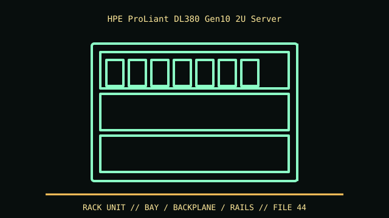

[ IDENTIFIED ENCLOSURE // PROLIANT DL380 GEN10 (NOT G9/G11) ]
HPE ProLiant DL380 Gen10 2U Server
87.3 × 445.4 × 679.4 mm for SFF configuration; LFF version extends to about 730.2 mm depth. Confirm rail depth and cable-management arm.

VARIANT / ARCHIVAL CAVEAT: DL380 Gen10 family includes multiple cage and backplane options; Gen10 Plus uses distinct platform. Record product number and drive cage identification before upgrades.
Mechanical specifications and fit
| Catalog identity | ProLiant DL380 Gen10 (not G9/G11) |
|---|---|
| Dimensions and clearances | 87.3 × 445.4 × 679.4 mm for SFF configuration; LFF version extends to about 730.2 mm depth. Confirm rail depth and cable-management arm. |
| Drive bays / mounts | SFF and LFF front cages are separate layouts: up to 24 SFF or 12 LFF in supported configurations, with optional rear/midplane drive positions. |
| Board, system and compatibility | HPE-specific board/riser/backplane/Smart Array. GPU support depends on riser, power and fan/air baffle option; check exact chassis SKU. |
| Revision / identification | DL380 Gen10 family includes multiple cage and backplane options; Gen10 Plus uses distinct platform. Record product number and drive cage identification before upgrades. |
Preservation and installation notes
DL380 Gen10 family includes multiple cage and backplane options; Gen10 Plus uses distinct platform. Record product number and drive cage identification before upgrades.
HPE-specific board/riser/backplane/Smart Array. GPU support depends on riser, power and fan/air baffle option; check exact chassis SKU.
- Capture the complete model/SKU, serial/date label, board assembly and bay/backplane/riser identifiers before disassembly; keep matched screws, trays, carriers, feet and cables with the case.
- Check the cited manual's specific build option before transferring hardware. Published maximum GPU, drive, fan or radiator capacity may not be simultaneous when a removable cage or alternative riser occupies that volume.
- For rack and vintage systems, preserve the exact rails, shields, doors, brackets and model-specific safety instructions; do not infer compatibility from a familiar brand or physical connector shape.
Manufacturer manuals and archival sources
- HPE ProLiant DL380 Gen10 specifications and QuickSpecsPrimary manufacturer or model-specific technical/manual reference used for the identification and mechanical data above.
- HPE QuickSpecs portal and archived model documentationSecond product manual, manufacturer resource or established technical archive; choose the exact regional SKU and revision.
When exact dimensions depend on configuration, the text says so; verify the measured specimen before making a fit or restoration decision.